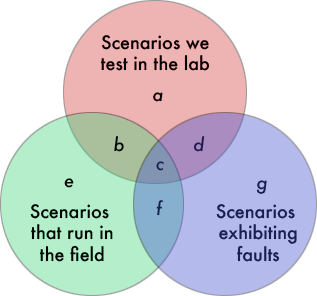

2.1 Introduction
I guess it’s time for the second installment. My earlier essay started just as a casual reply to a client, but when Rex Black posted it on his web site, it went viral — going to #3 on Reddit and appearing prominently on other social networking amalgamation sites. Since then I’ve had the pleasure of watching the dialog unfold. It’s ranged from profound to just silly and, sadly, the majority of it falls into the latter category. It appears as though there is a very wide mythology, perhaps propelled by industry hope and fuelled by academic programs and consultants desperate to justify their reason to exist.
There have been precious few real arguments against the positions I laid out in the earlier essay, but a lot of emotive disagreement. In this second round I take inspiration from the dialog that ensued from the first round and offer a few more insights and opinions. Forgive me for opining a bit more in this round than in the first, but I had already covered most of the substantial groundings earlier.
Here, I’ll present a very few fundamental arguments against unit testing that in theory should have been in the first article, such as Weinberg’s Law of Decomposition (An Introduction to General Systems Thinking by Gerald Weinberg, 2001). I’ll offer some models that help us reason about QA in general, such as the Venn diagram on testing opportunity. And I’ve looked further into my contacts to find other smells in unit testing, such as the work-in-progress from Magne Jørgensen, and the broader perspective at Toyota that challenges the very idea of testing as we usually think of it. Last, I’ll look at some of the more archetypical responses that the gallery offered on the first round, together with my analysis. These provide a good cross-section of the typical misunderstandings that flood our industry.
Please refer back to Chapter 1 before launching into social media discussions on Chapter 2. You can find the earlier chapter at: http://www.rbcs-us.com/documents/Why-Most-Unit-Testing-is-Waste.pdf.
2.2 Weinberg’s Law of Decomposition
Jerry Weinberg has penned his names to a number of “laws”, each one offering whimsical but profound insights into the nature of things. You probably all know Weinberg’s Law of Composition, at least under another name or catch phrase: The whole is greater than the sum of its parts. We have all experienced such in our software development and, as a concept, it’s something knowledgeable people hold true of design.
Weinberg’s Law of Decomposition is subtler. It says that if you measure a system according to some gauge of functionality or complexity, and then decompose it, and measure up what you end up with, that the sum of the parts is greater than the whole. Huh? This seems to contradict the Law of Composition. It’s a matter of perspective and interpretation. Let’s use a specific example, one related to unit testing, to illustrate.
Let’s say that your code needs to associate each of a set of names with a corresponding telephone number. We usually partition that functionality into a module or object called a map. And, in fact, there may be several such map objects in our program. Faced with the first such need you create a class for it. That class instantiates objects in one or more parts of the program. It’s not that the map becomes the private property of one scenario, but that it can participate in broader networks of execution within the program again and again. (This isn’t an OO thing: the same is true with Pascal procedures.)
You may know about how big the map should be based on the client for the upcoming release but there will be more releases after that, and you want to make the class reasonably change-proof. So you allow the map to dynamically create as much memory as it needs. The current names are ASCII strings and the telephone numbers are eight decimal digits, but you make the map slightly more general than that (because maybe your country doesn’t use 8-digit numbers) — maybe you make it a template instead of a class, or you insist that its objects adhere to some declared interface.
Now you write the unit tests for the map class methods. Unless you have full traceability, you can’t know exactly what kind of data the program will offer the map nor in what order it will invoke the methods, so you test a reasonable number of combinations — A large, reasonable number of combinations. This is all the more important if the map is used from several different loci within the program, as we want to cover as many of its countably infinite usage scenarios as possible.
The map may even have a method count that reports how many associations it holds. And we need to test that. It seems like a natural part of what a map should do. We test the entire interface of the map. Maybe there is a method to replace an association. And to delete one. Or to fetch one out as a pair. It depends how good the programmer is, doesn’t it?
But what fraction of that interface is actually used by the application? And how much of the generalized engineering is really needed by the app? Maybe the app uses the map only to track the phone calls that the end user made in the past hour, so the system scenarios for map require that it hold no more than five associations or so, in spite of the fact that we design it (and test it) for millions of associations. Maybe count is never invoked. Even though our interface allows us to associate a new number with an existing name, maybe the app never needs that. The map in isolation requires more exercising by its tests than the application will requires at any point in its lifetime!
There are dozens of strong arguments for generalizing the interface of map, the most compelling of which are the social expectations around what a map does (to ease the discovery process) and the ease of understanding that comes with compliance to that expectation. There are a few good reuse arguments that also apply here. And to exapt another one of Weinberg’s paradoxes, general solutions are easier to reason about than specific ones.
But that the map is general doesn’t mean we test it locally: we still test it in the context of its execution, in the system, with system-level tests. Why? We can’t test everything at the unit level, anyhow. To exhaustively test a map will literally take forever.
Let me reproduce (verbatim) an argument I made earlier about the computational complexity of this problem. I define 100% coverage as having examined all possible combinations of all possible paths through all methods of a class, having reproduced every possible configuration of data bits accessible to those methods, at every machine language instruction along the paths of execution. Anything else is a heuristic about which absolutely no formal claim of correctness can be made. The number of possible execution paths through a function is moderate: let’s say 10. The cross product of those paths with the possible state configurations of all global data (including instance data which, from a method scope, are global) and formal parameters is indeed very large. And the cross product of that number with the possible sequencing of methods within a class is countably infinite. If you plug in some typical numbers you’ll quickly conclude that you’re lucky if you get better coverage than 1 in 1012.
In theory we could reduce this number if we had a crystal ball for the orders of method executions, argument values, and so forth, that the class’s objects will experience in the field. And we in fact can’t be sure about what tests faithfully reproduce tomorrow’s system behavior. We make lots of arguments about equivalent sets across configurations of value, but we rarely prove these arguments. In an OO system with polymorphism we probably can’t even prove that a given method will be invoked at all, let alone know the context of invocation! All bets are off for such formal proofs in an OO world (though there would be hope in FORTRAN).
One can make ideological arguments for testing the unit, but the fact is that the map is much larger as a unit, tested as a unit, than it is as an element of the system. You can usually reduce your test mass with no loss of quality by testing the system at the use case level instead of testing the unit at the programming interface level. System tests line up many method invocations, all of which must work for the test to pass. (I know this is a bit simplistic, but it holds as a generalization.) System testing becomes a form of compression of information that one simply cannot realise at the unit level.
That’s what Weinberg’s Law of Decomposition indicates in a nutshell.
It can be even worse: the very act of unit testing may cause the interface of the map to grow in a way that’s invisible in the delivered program as a whole. Felix Petriconi and I have been debating the unit testing issue in Email, and today he wrote me that: “You are right. E.g. we introduced in our application lots of interfaces to get the code under (unit) test and from my point of view the readability degraded.” David Heinemeier Hannson calls this “test-induced design damage:” degradation of code and quality in the interest of making testing more convenient (http://david.heinemeierhansson.com/2014/test-induced-design-damage.html). Rex Black adds that such tradeoffs exist at the system level as well as at the unit level.
There are techniques from lean software design (e.g., “Lean Architecture for Agile Software Development”) that can help this. In general:
☞ Design classes and APIs using good domain design techniques that generalize to the future. Code up their interfaces to express the design. Implement only those data structures and methods necessary to support the known, forthcoming use cases that will be delivered. If the system use cases change, you can continue to evolve the individual methods and private data without disturbing the overall architecture.
2.2.1 A corollary
Weinberg’s Law of Composition tells us that we need much more than the unit to show that a bug has been mitigated.
☞ For this reason, most regression tests should be integration tests or system tests — not unit tests! And as we showed above, Weinberg’s Law of Decomposition suggests that you would do wasteful over-testing as well if you used unit tests for your regression suite. You might have unit bug regression tests if a business oracle exists for the results of the algorithm being tested (see Chapter 1).
2.2.2 Some historical context
An historical note: I have heard people justify the use of TDD and unit testing to flesh out the interface of such a class to support long-term reuse. Yet TDD is the darling of XP which also warns us about YAGNI: “You Ain’t Gonna Need It.” In short: don’t write code unless you have a use case for it. Even if you were to honor reuse and back down on YAGNI, it’s much better to use domain modeling techniques than testing to shape an artefact. Testing still must be done, and should be done, at the system level: where the value is.
A second historic note: CRC cards (“A Laboratory for Teaching Object-Oriented Thinking,” Kent Beck, OOPSLA ’89 Conference Proceedings; see http://c2.com/doc/oopsla89/paper.html) used to be a powerful way to create a class-based or object-based design from end-user scenarios. In a role-play of a system scenario, each team member represents the interests of one or more classes or objects, using a recipe card to represent each crisply-named object; the name appears on the top line of the card. The rest of the card is split in two: the left half lists the responsibilities of the object or class to the system, and the right half are the collaborators, or helpers (other cards) that the object enlists to complete its work. Today the CRC acronym stands for Candidate object, Responsibilties, and Collaborators. If the card is on the table, it’s a class; if it’s active in the discussion of a scenario, its person holds it aloft and we think of it as an object. (In reality, the cards represent roles rather than either classes or objects, but that’s another discussion.)
The CRC technique is not an analysis technique (though it offers great analysis insights) but rather a design technique. It focuses on the how of providing business functionality. A CRC design is minimal because the only way to add a responsibility to a card is to support a use case or scenario.
However, I have seen CRC cards little used in recent times, probably because the industry abandoned socially-generated designs to those requiring a tool like J-Unit, so the tests could drive the design – hence, TDD. Most of the focus is on classes instead of objects, and those most often come out of a “find the nouns” exercise or from domain analysis or Domain-Driven Design (DDD). There, the goal is generality and broad applicability.
Neil Harrison remarks, “There is a useful, if imperfect distinction between static design (e.g., find-the-classes) and dynamic design (e.g., how do the objects play together?) The focus of CRC design is actually on the dynamic design, although it does a good job with the static design as well. The layout of the classes is only a help — the real stuff is when the program executes. It occurs to me that unit testing is kind of focused on the static design. It is therefore by definition inadequate and less important.”
☞ If you’re using unit tests as an aid to designing your software, try using CRC cards instead. A CRC card deck is a running program in a funny language with detail all the way down to the unit level. If it runs during the role-play it will likely run in the wild. After the role-play exercise, it’s just a matter of coding it up. It gets the collective team mind engaged in quality rather than just you and a tool.
2.3 There are few unit level bugs
In Chapter 1, I pointed out that it’s waste to test anything for which there isn’t an independent oracle of correct behaviour. Many applications contain such algorithms, and such algorithms independently can be tested: e.g., memory management (thanks to Felix Petriconi), network routing, or graph manipulation. These algorithms have business value in their own right: e.g., a network routing algorithm contributes to lowering congestion, decreasing latency, or increasing reliability, and testing it has a first-order, traceable tie to product value. It takes a lot of imagination, hand-waving, or indirect inferences to say the same of many object instance methods.
If the code doesn’t do what the programmer intended it to, we call that a fault. If the programmer just isn’t great as a programmer, the code may end not doing what the programmer wanted it to do and a fault results. If the programmer interpreted the requirements one way and the customer meant it another way, then the programmer is also likely to introduce a fault into the code. This is one class of fault that unit testing won’t catch. Miscommunication and bad assumptions that precede coding in requirements and design account for 45% of software faults (http://www.isixsigma.com/industries/software-it/defect-prevention-reducing-costs-and-enhancing-quality/).
☞ Testing — whether at the unit, system or integration level — at its very best can catch only a fraction of the faults that arise in software. Teams should use a broad repertoire of quality assurance techniques to remove defects.
Unit testing exists to find faults so that programmers can track down and remove the bugs that cause them. A bug is code logic, inserted by a person, that may cause a fault. Some formal definitions limit the application of the term bug to apply only to problems found prior to delivery and use the term error to apply to those that are triggered only in the field; others use error as a mental mistake. From a quality perspective, the only ones that matter are those that may arise in the field — which of course includes many that we can find before delivery. The idea behind testing is that each bug found before product release reduces the number of errors in the field. (A defect, on the other hand, can happen if the printer or screen is missing pixels in its output. See: http://www.differencebetween.info/difference-between-fault-and-failure)
A failure is an inability to meet requirements. Most faults cause failures, but not all failures owe to faults. Failure can be an emergent consequence of context, and failure always considers context. There can be a fault that produces the wrong value in my tax-filing program but there is no failure unless the tax authority catches it and comes after me to make it right. Any system connected to the real world can experience a sequence of events that were unforeseen by the designer. Given that the sequence of events is conceivably infinite, the failure is unforeseeable and as such is not classified as a fault.
Some failures are hard to test in practice, and there are many failures that simply cannot be tested. (Think of synchronization errors that occur only within some timing window; in a system with multiple clocks, the window of opportunity for error can be infinitely small, which means you need an infinite number of discrete tests to explore the space of possibility of failure.) Most software failures come from the interactions between objects rather than being a property of an object or method in isolation.
☞ No matter how much you increase your investment in unit testing, you still need other QA measures to remove faults.
Failures are bad: we want to avoid failures. A fault is bad only if it causes a failure. If we can’t identify the requirement supported by the test for a specific method, then finding the bug has no value.
Some writers call the disagreement between a unit test’s expectation and the code’s behaviour an anomaly rather than a bug. An anomaly can arise if the test data are bad or, in fact, if there is a bug in the test (those are as likely as bugs in the code; see Chapter 1). From a practical business perspective, anomalies mean something only if they lead to failures. Without the contextualization of either requirements or interactions with other units, finding failures at the unit level is a dicey proposition.
Let’s say that your unit tests discover a problem with your Stack library: that when you push more than 215 items, all items but one on the Stack are lost. This is certainly a bug: the kind of thing we look for in unit testing. It is certainly a fault. But we find that the application program never pushes more than three things on any Stack at any time. By definition, it is not a failure: it is irrelevant to product value. It’s likely that fixing this bug is waste: that is, I will never realize my return on the investment of fixing it. Even testing for it is waste.
One of the largest sources of anomalies is in fact Weinberg’s Law of Decomposition: finding faults where they simply don’t matter because, given the contextualization implicit in the application, most paths through the code are never exercised. It benefits nothing to find a bug in a method we added to class because we think we might need it some day, given that the application never calls it. Using your end user’s computer memory for that code, and charging them to buy it, is at best sloppy and at worst fraud. Testing it is waste.
☞ The payoff in investment is higher in functional testing than in unit testing: put your effort there. Functional testing typically finds twice as many bugs as unit testing (see the Capers Jones data a bit later in this column), even though agile developers spend most of their time doing testing at the unit level, including TDD. (http://www.ambysoft.com/essays/agileTesting.html)
In summary, it seems that agile teams are putting most of their effort into the quality improvement area with the least payoff.
But back to unit testing.
All this extra baggage does provide an outlet for more nerd work! Given that we design at the unit level without regard for the details of what code is used by the application, we end creating a good deal of dead code. Some organizations pride themselves in removing that code after finding it and they label it with the noble title of refactoring, aided by code coverage. (George Carlin’s standup routine on Stuff, and how to deal with leftovers in your refrigerator, comes to mind here.) Given that unit testing has become so popular in the past decade it’s no wonder that refactoring and code coverage are having their heyday.
And if we refactor methods or data across levels of the class hierarchy, then the unit tests fail. Remember: tests are part of your architecture, too, and this is a coordinated change. This coupling makes the system fragile under change — if you include the tests as part of the system. But refactoring causes these tests to fail so much that many people do as Andreia Gaita (@sh4na) does: “I find that I throw away/rewrite tests that fail a lot/often, they’re too fragile to be useful for large teams/systems.” (https://twitter.com/sh4na/status/480785585791971328, 22 June 2014). I guess she keeps the tests that work. In Chapter 1 I already described how information theory catches up with people like Andreia.
2.4 The Ethics of Testing and Releasing Latent Bugs
Your software will fail sometime in the field. Get over it. You do your unit tests so you can feel good about at least having tried to do your best when the code inevitably fails. No one can blame you for doing your best, right? The only thing is that, unless you’re in an oppressive work environment where you have a gun to your head to do unit tests or where you are prevented from doing broader testing, unit testing isn’t the best you can do. And unit testing will never compensate for the organizational and process changes you feel are beyond your reach, anyhow.
Except maybe for those making kitchen recipe-filing programs, most of the rest of us work in complex domains where we will never prevail to the point of perfection. The question is: what do we do about it? It’s easy to let the user deal with the crash or to pray that our errors don’t corrupt their data. Yet the very idea behind testing is that it gives us tools to deal with this challenge more intelligently. Why we don’t exercise them more fully than we do is indeed a wonder, and that’s what we’ll explore here.
As background, there is a strong psychological force at work here. Tests reveal failures — or, at least good ones do. Failure is a bad thing, isn’t it? It’s O.K. to hoard our failures in the lab where we are in control of our destiny and that of the code. Some of us even get raises in proportion to the number of failures we mitigate. We don’t put redundant checks (a run-time transformation of the test logic) into the code. We create separate modules to elicit faults, carefully isolate them outside the code and call them tests. We do this for one of two reasons.
The first is that we usually don’t think generally enough: we do point testing instead of range testing. A point test sends one or more fixed sets of values into the system and looks for a fixed set of expected responses. A range test is more dynamic and uses redundant calculations, data, or context, instead of a fixed value, to validate the result. Most unit tests I’ve seen are usually point tests. Check yours out.
The second is that — horrors! — the code might actually fail in the field if we have it check up on itself. It’s better to just let it run and, well, in spite of that little itty-bitty failure, the code’s overall general design will triumph and the system will work. Yeah, it will work well enough, anyhow. Or we raise a popup error window to the user and continue as if nothing happened; it’s the user’s problem. Just have a chat with some of your students or programmers to see if that isn’t how they think!
We usually think of a test as a combination of some stimulus, or exercise, together with an oracle-checker that compares actual and expected results to detect faults. While we usually separate software into test drivers, the software under test, and the oracle-checker, considering the two testing components together helps us extend our notion of quality into post-partum software. And this is not some ideal dream, but can be achieved today just by an act of will and design.
Testing works on the assumption that suitably exercised code, together with instrumentation to detect departure from expected results, creates feedback strong enough to remove important defects that would otherwise go the field. We remove both the defects and the tests before deployment. Implicit in this assumption is that our exercising of the code is not only representative of what will happen in the field but that it either replicates or, by extension (e.g., through range testing) reproduces the majority of states and paths that the code will experience in deployment. If that’s true, then by inference the released code must be correct.
This is at best a dodgy assumption for two reasons. First, the amount of time spent on testing is usually a tiny fraction of the time that the system will spend running in the field. Reproducing all the scenarios for even a trivial system would take years (or, in some cases, centuries or even an eternity), and we just don’t take that much time. Those scenarios come around when the customer clock is running rather than the vendor’s clock. Just a back-of-the-envelope analysis suggests that the combination of scenarios exercising the system in the field will be considerably larger than what we can reproduce in the lab. Second, we can’t instrument the code to catch all possible defect conditions.

Let’s consider the scenarios we reproduce in the lab, for testing, the scenarios that run in the field, and the scenarios that are broken — that show failures. (By “scenario” here we mean reproducing all the perquisite inputs and coordination of feature invocations.) Let’s look at each of the combinations:
| a | These tests detect no faults, and are never even used, so add no value |
| b | While used in the field these scenarios work O.K. |
| c | Hopefully, we find these errors in the lab and fix them |
| d | We waste time fixing these: they are bugs in theory only, as they are never used |
| e | We never test these (maybe because they are trivial) but the work O.K. |
| f | Here are the bugs we deliver. |
| g | Bad code that is never actually run in the field |
Good analysis can reduce the effort to test sequences that will never occur in real life ((a), (d), and (g)). (Trying to increase the overlap between scenarios tested in the lab and scenarios that run in the field is referred to as test fidelity — thanks, Rex!)The more understanding we have of our client, the less we will deliver something that works wrong or that is never used. More importantly good analysis also reduces field failures ((c) and (f)), which is where the rework cost lies.
☞ Quality assurance as realized through testing assures nothing: it only measures quality (thanks and a tip of the hat to Rune Funch Søltoft). Don’t count on tests for quality, and pay particular attention to good analysis. Great testers have insights that can challenge the soundness of a casual analysis and can drive the effort deeper, based on the usual “thinking ahead” talent that one finds in great testers.
The problem with the last case — unanticipated field faults (f) — is that the fault may go undetected in testing. The code may just silently generate the wrong result and go on. The only scenarios for which testing delivers value are those that we foresee, that we test, which actually run in the field, but which exhibit failure in the lab (c). That is, testing generates value in only one out of six of these combinations. We get value because we bring together the right scenario-generator and the right correctness oracle in one place.
Tests can be written in two ways: either to cover a general oracle of truth, or to check against a single expected result. We can test an adder according to the latter approach by evaluating whether 1 + 1 indeed gives us 2. But there are more general tests we can apply for any i + j = k. The tests are in some sense weaker than those for specific values but they nonetheless make sense. We can check if k is greater than both i and j. We can check that the result is even unless exactly one of i and j is odd; these can be evaluated with low-level bit logic that is likely independent of the arithmetic apparatus in the language, libraries, and the rest of the execution environment. We can see if their value falls within the range that knowledge validates for the operation.
These kinds of checks do not require a case-by-case value oracle. As such, they can run in the field: we can deliver them with production code. The good news is that these checks work to reduce the size of (f) over time! In my experience they reduce the need for testing work on scenarios in the sets (a), (b), (c), and (d) as well — though it takes careful test design and planning to capitalize on this benefit. And there are many known techniques in the testing world to do this very thing. (The reduction doesn’t come from pushing the bugs to the field, but by finding them in-house using alternative mechanisms.)
This argumentation, of course, is just an alternative justification for the use of assertions in the code, as we already introduced in Chapter 1. Assertions are powerful unit-level guards that beat most unit tests in two ways. First, each one can do the job of a large number (conceivably, infinite) of scenario-based unit tests that compare computational results to an oracle. Second, they extend the run time of the test over a much wider range of contexts and detailed scenario variants by extending the test into the lifetime of the product.
So, one more time with feeling:
☞ Turn unit tests into assertions. Use them to feed your fault-tolerance architecture on high-availability systems. This solves the problem of maintaining a lot of extra software modules that assess execution and check for correct behavior; that’s one half of a unit test. The other half is the driver that executes the code: count on your stress tests, integration tests, and system tests to do that.
Telecom systems have long taken this approach but they go even a step further. When one of these tests fails, they use independently written software to return the system to a known safe state while retaining as much work in progress as possible. This is one of the fundamental building blocks of fault-tolerant computing. In the end, these “tests” change your quality mentality. If my browser fails to connect to a site, it doesn’t just issue an error message. The “test” digs deeper to find out why. If I can’t reach that page because the Internet is in a particular stage of disconnection, it queues the request, and automatically re-tries it on my behalf when the network comes back online. Great quality assurance turns the drudgery of tests into customer-pleasers.
I’m a big fan of frameworks like TestFlight (http://www.testflightapp.com) that extend your development presence into the field. Without it, you’re orphaning your bugs to your clients. You should instead be responsible for caring for every bug you conceive.
To me, it’s unethical to know that you are delivering a bug to your client unannounced. When I deliver software I have zero-defect tolerance. Extending your QA code into the field raises the bar on what QA really means.
2.5 Unit Testing: The Worst Approach we Know
When Chapter 1 went up on the RBCS site, Tweets blossomed around it like thistles in the summertime. Everyone wanted a piece of the discussion, especially those who might have something to lose if I was right. I started to see a trend in the Tweets, ‘blog posts, rants and other overtures around unit testing. It all kind of came to a head in the little talk posted by Keith Pitty entitled, “The Only Way to Test!” He reviews the arguments by several of the unit testing and TDD pundits: David Heinemeier Hansson, me, Uncle Bob, Gary Bernhardt, Correy Haines, and the usual TDD crowd. He summarizes their arguments.
What struck me is that most arguments for unit testing and TDD are of the form: “be fearless and you’ll be faster,” or present homilies such as “aim for test feedback in 300 ms.” In this talk, it seems that only Correy Haines seems to come out with reasoned advice related to focusing on the places where there is the most payoff. I, too, also feel that in Chapter 1 I strove to give compelling models that are in essence gedanken experiments that lead the developer into reasonable practice. I’ll argue that there’s some science, or at least some reason, behind my admonitions. Many of the other “arguments” are either emotive or are credos.
But shame on all of us: none of us gave hard data in our arguments. I prefer to give models, wrapped in a story, because any individual’s data is always context-sensitive. But good researchers can find quantifiable trends; I’d seen many of these over the course of my career and they gave me confidence in making my arguments. But, to keep myself honest, I’ve done some light research into how some of the software engineering heavyweights weigh in on unit testing. I found some interesting data from Capers Jones’ work. Unit testing is the least effective bug removal step that we know (Programming Productivity, 1986, Table 3-25, p. 179). One good measure of a defect removal technique is efficiency: the percentage of problems it is able to detect and remove. The table shows results across a range of developments:
| Removal Step | Efficiency | ||
|---|---|---|---|
| Lowest | Modal | Highest | |
| Formal Design Inspections | 35% | 55% | 75% |
| Modeling or Prototyping | 35% | 65% | 80% |
| Field Testing | 35% | 50% | 65% |
| Informal design review | 30% | 40% | 60% |
| Formal code inspections | 30% | 60% | 70% |
| Integration Test | 25% | 45% | 60% |
| Functional Test | 20% | 35% | 55% |
| Code Desk Check | 20% | 40% | 60% |
| Design Doc Desk Check | 15% | 35% | 70% |
| Unit Test | 10% | 25% | 50% |
| Total | 93% | 99% | 99% |
A bit dated, I know. In a 2012 paper by the same author (“Software Defect Origins and Removal Methods,” Draft 5, 28 December 2012, http://www.ifpug.org/Documents/Jones-SoftwareDefectOriginsAndRemovalMethodsDraft5.pdf) we find these data for a best-of-class product. Unit testing still comes out only as a mediocre approach at best, and much lower than system test:
| Removal Step | Efficiency |
|---|---|
| Formal Inspections | 93% |
| Static Analysis | 55% |
| System Test | 36% |
| Functional Test | 35% |
| Component Test | 32% |
| Unit Test | 32% |
| Desk Check | 27% |
| Prototyping | 20% |
| Acceptance Tests | 17% |
| Regression Tests | 14% |
| Total | 99.96% |
2.6 Thinking one level more deeply
Keith Dahlby (@dahlbyk) replied to the idea that we should throw tests away that haven’t failed in a year with this: “not unless the code under test is not expected to change - which is silly to predict, so no, I would never delete tests.” (https://twitter.com/dahlbyk/status/479092758012248064, 18 June 2014) Funny: it seems to me that if you change the code you should change the test, and if the code is expected to stay the same the test should stay the same.
The psychology of “keep tests around only for changing code” must go something like this: I need a safety net to catch inadvertent changes to program behavior; e.g., those I make during refactoring. This pretends that we can change a function in a way that changes only part of its behavior: that is, that we can change a function without changing most aspects of its externally observable behaviour. More to the point, it pretends that we can have a high, but not perfect, degree of confidence that we can write tests that examine only that portion of a function’s behavior that that will remain constant across changes to the code. That means that good unit test design must foresee how the code may change. That in turn implies being able not only to partition a method’s value mappings into disjoint cutsets of evolution, but to be able to demonstrate how the code, or at least the tests for the code, map onto those cutsets. I think that programmers fool themselves into believing they can do this. Unfortunately, there is no more preventing such assumptions from being wrong than prevents the correctness of the change itself being flawed. This is therefore a seriously flawed and dangerous perspective.
☞ Changing code means re-writing the tests for it. If you change its logic, you need to reevaluate its function. If you move it to another class, you need to re-contextualize the mocking for the test. If a change to the code doesn’t require a change to the tests, your tests are too weak or incomplete. And if you’re in the code to refactor it independent of any value-added change, that’s another kind of waste. Refactor code when you have to change it anyhow rather than for its own sake. Refactoring is like leaving the campsite cleaner than when you found it — not making a cleanup tour of campsites.
Andreia Gaita (@sh4na) Tweeted: that she was “[n]ot talking about tests for the code that was changed, but other tests for related systems in a large application.” It doesn’t matter. The 1990 paper by Kaiser and Perry demonstrated that a change to a derived class portends for changes in base class method behavior, so all bets about test invariance are off. Their analysis generalizes to the interaction between any pair of code segments within a system. Encapsulation is an administratively useful fiction but is an illusion from the perspective of formal computational models.
As I mentioned earlier, she also wrote: “I find that I throw away/rewrite tests that fail a lot/often, they’re too fragile to be useful for large teams/systems”. If they’re unit tests (which was the context of the discussion) they’re under-contextualized with respect to system requirements and can be over-contextualized with respect to a local view of the API. The easiest function to test is the one that returns a constant value. By discarding the functions that fail often, one reduces one’s test inventory in a way that may produce as much data, but which produces much less information, at least about faults in the program.
The dynamics are different for small chunks of code than for aggregate behaviour, which is one reason that requirements-level testing is qualitatively different than unit testing. Good Smalltalk methods are about three lines long: good object methods are very short and that they behave like atomic operations on the object. Clean Code (Bob Martin, 2008) says that it’s rare that a method should grow to 20 lines, and he describes Kent Beck’s Smalltalk code as comprising methods that are two, three, or four lines long. Trygve Reenskaug (inventor of MVC) recently calculated the average method length in a large program typical of his code: it also came out around three statements per method.
Consider that such a method is the unit under test. I have ten unit tests for it. I make a change to one line of the method and try to argue that five of the tests are still valid: i.e., that the single-line change won’t change how the function responds to those tests. The chances of the other two lines being well encapsulated from the changed line are pretty small, so changes to code should almost always imply changes to a test. This would lead to a unit-test rule:
☞ Retain tests only for unchanging code. If the code changes, replace the tests — the likelihood that the old ones should still pass is very small. But don’t just throw away tests for the changing code just because it upsets you that frequent change causes them to fail.
However, given all the arguments about granularity in Chapter 1, this doesn’t save the day. It’s better to reason at the level of system tests and, at that level, to re-derive the test set from the requirements. Tests don’t test the code: Code almost always does exactly what it is asked to do. Testing rather tests the design that drives the code and the translation from the analysis to the design to the code: its adherence to requirements. In the end, testing tries to test the process (which is closely tied to the rationale behind the lean people’s fascination with process and process improvement). And those problems aren’t usually expressible at the unit level, but rather at the system level.
☞ When updating tests, ignore the level of code changes: let the requirements changes drive the changes in the tests. Requirements should of course drive test design as well. Test at the level of socialized requirements and their interface to the articulation in design.
2.7 Automation Doesn’t Lead to Learning
I mentioned in the first chapter that the foundations of lean and Scrum in the Toyota Production System treated automation with some skepticism. The basis for this skepticism is that improvement comes from human thought and social interaction, and that a single human being on the work force can keep adapting and coming up with additional improvements. Introducing improvement through automation gives a one-time benefit that, unlike the thinking employee, doesn’t keep on giving. Even when introducing automation, it should be done in a way that doesn’t preclude–introducing the manual procedure instead (e.g., for the case where the machine might cease working.) That implies that machines shouldn’t be much bigger or stronger than human beings: if they are, then a person can’t step in to do the job.
Toyota has recently renewed its faith in these ideas to the point of replacing robots on its assembly lines with individuals. See the article from April 2014 at qz.com:
http://qz.com/196200/toyota-is-becoming-more-efficient-by-replacing-robots-with-humans/
2.8 The myth of cheap, early testing
In the past I’ve had the great pleasure of interacting with Magne Jørgensen at the Simula Center in Oslo. He has recently debunked some software engineering myths that many have held dear for years. One of these myths is a common excuse for unit testing: the earlier you test, the cheaper it is. We have this belief that the closer to source our testing is, that the more cost-effective it will be. Jørgensen challenges this claim: (“Myths and Over-simplifications in Software Engineering”, research paper, simula.no, http://citeseerx.ist.psu.edu/viewdoc/summary?doi=10.1.1.259.5023)
The report states (page 5-4) ‘... regardless of when an error is introduced it is always more costly to fix it downstream in the development process.’ An assumption of no added error detection cost and always decreasing correction cost when detecting more errors in the phases where they are introduced, creates, not surprisingly, great savings from better testing infrastructure. The assumption is, as argued earlier, not supported with evidence, and, likely to be incorrect.
2.9 Conclusion
The most important thing I want you take away from this chapter is that most bugs don’t happen inside the objects, but between the objects. Adele Goldberg used to say “it always happens somewhere else.” The crucial design decisions of object-oriented programming happen outside the wall. Unit testing has returned us to the pre-object days of modules in what might better be called class-oriented programming than object-oriented programming. Unit testing checks up on exactly the same small design decisions “inside the wall” that are easily caught without the waste of additional code: inspections, clean room, code reviews, and pair programming come to mind.
The real semantics lie in what happens between objects. (See “The DCI Paradigm: Taking Object Orientation into the Architecture World.” In Babar, Brown, and Mishkin, eds., Agile Software Architecture, Morgan Kaufman: December 2013). Unit tests only let you guess at that. As Capers Jones’ numbers point out, the payoff is a pittance.
Developers make a big deal out of this pittance, perhaps because it is something they feel they can control. Broader testing requires cooperation across other software modules and a sense of teamwork. Nerds, who tend to be introverted, would much rather sit with J-Unit than sit around a table playing CRC Cards. Their ignorant bosses who view the latter as a meeting and the former as real work add fuel to the fire.
Dig deeper.
2.10 Acks
Tons of thanks to Felix Petriconi, Neil Harrison, Brian Okken, and Rex Black